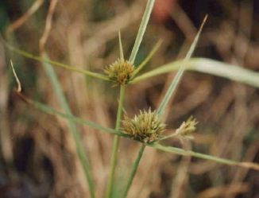
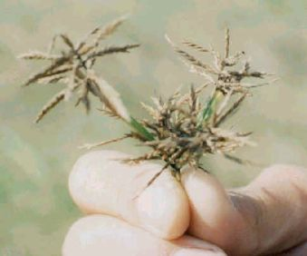

11.
海韭菜(土香)
外號:韭菜
海韭菜為水生或陸生，在鹽分不高的沼澤區成長，整株低矮，稈莖不明顯，葉子為細長條狀，高約50公分，成輪生狀。開花時稈柄長約40～60公分，花為頭狀花序，開細小白花，花托有三個成三角的葉子，秋天開花。它在未開花削十分類似菲菜，葉長15～20公分，寬 0.3公分細長無毛，以地下球莖繁殖。成群體小生長。在濕地上長得較高，在沙地上長得比較低矮。遠遠看比海米更像韭菜 |
||
|  |  | |